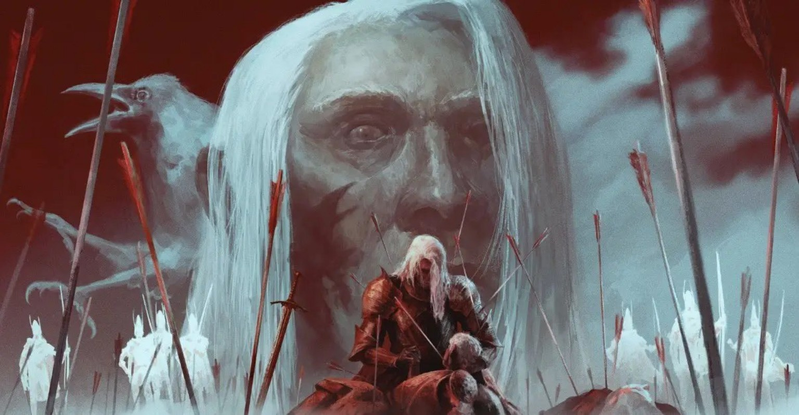
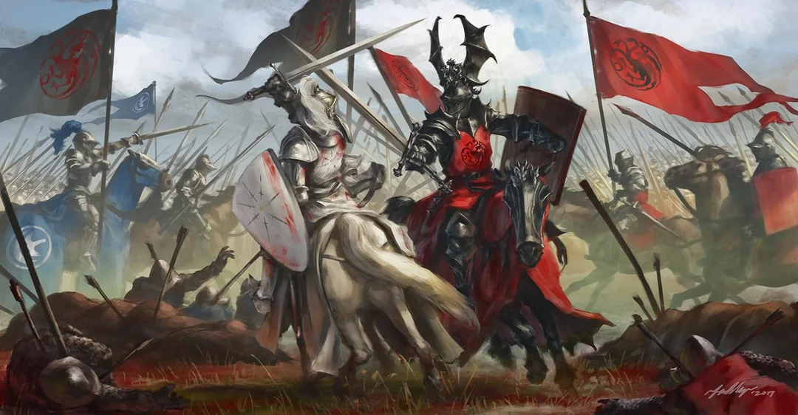
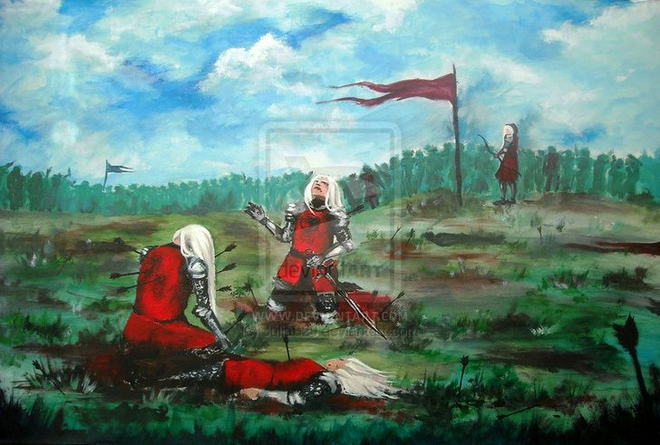

The first Blackfyre Rebellion began in 196 AC and lasted for a year. The reasons were many — Daemon Blackfyre was beloved, powerful, and seen by the people and nobles as more deserving of the throne than his half-brother Daeron II. Doubts surrounded Daeron's lineage, and when King Aegon IV gifted the Valyrian steel sword Blackfyre to Daemon, many took it as a sign of the true heir. The final blow came when Aegon IV legitimized all his bastard children on his deathbed. It took years to convince Daemon to press his claim. Maester Mandel believed it was Aegor Rivers who ultimately persuaded him, while King Maekar also pointed to Ser Quentin Ball as a key figure. Once Daemon declared his kingship, he adopted a black dragon on red as his sigil — the reverse of House Targaryen's colors — earning him the title "the Black Dragon", while Daeron II became "the Red Dragon." Daemon's move was premature. King Daeron II moved swiftly against the threat, but Daemon evaded capture with the help of powerful allies. His supporters used the crown's response as justification for open rebellion, claiming Daeron had acted unjustly. The rebellion erupted across the realm, with many great lords and knights declaring for the Black Dragon. Among Daemon's most fearsome supporters were Aegor Rivers, known as "Bittersteel," and the legendary knight Ser Quentyn Ball, called "Fireball." ...Read More
On the other side, King Daeron II was defended by his own formidable champions, most notably Ser Brynden Rivers — "Bloodraven" — a master of intelligence and one of the most dangerous men in Westeros.before the battle of thr redgrass field ser Quentin ball was killed by an arrow a signifcant loss for Daemon The conflict reached its bloody conclusion at the Battle of the Redgrass Field Daemon killed knight of the nine stars and fought the lord coomander of the kingsguard and defeated him in brutal fight, in 196 AC. It was there that Daemon Blackfyre fell, cut down by a volley of arrows said to have been directed by Bloodraven himself. Daemon died alongside his twin sons Aegon and Aemon, dealing a devastating blow to the rebellion. With their leader gone, the Blackfyre cause collapsed — though Bittersteel managed to take the blackfyre sword and gather the remainder of the army and go to the hill where brynden rivers and his archers were positioned. he managed to take the bloodraven's but the dornish forces led by baelor targaryen —"breakspaer"— arrived and struck the rebel army like a hammer while Maekarforces stood like an anvil, though Bittersteel managed to eascape across the Narrow Sea, carrying the sword Blackfyre with him, ensuring the dream of a Blackfyre king would not die with Daemon. go back


